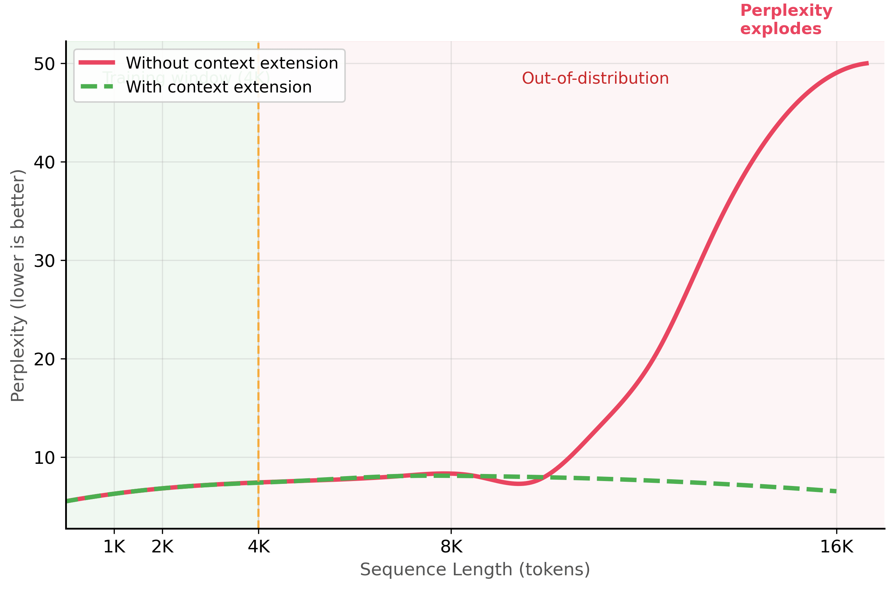

"The model was trained on 4K tokens. I fed it 32K tokens. It handled the first thousand and last thousand beautifully. Everything in the middle? Lost, presumably on vacation."
Finetune, Context-Stretching AI Agent
Most real-world documents are longer than models were trained to handle. Legal contracts, research papers, codebases, and book manuscripts routinely exceed the 4K or 8K context windows that many models were originally trained with. Simply passing a longer sequence to a model trained on shorter sequences causes severe quality degradation because the positional encodings extrapolate into regions the model has never seen. This section covers the techniques for extending a model's effective context length: mathematical adjustments to positional encodings, continued Section 7.1 on long documents, and practical chunking strategies for when extension is not enough (chunking is also central to RAG systems). The positional encoding foundations from Section 3.1 explain why position information is necessary and how RoPE encodes it.
Prerequisites
Before starting, make sure you are familiar with fine-tuning overview as covered in Section 16.1: When and Why to Fine-Tune.
16.7.1 The Long Context Challenge
Transformer models encode position information through positional embeddings or positional encodings. When a model trained with a maximum sequence length of 4,096 tokens receives a sequence of 8,192 tokens, the positions beyond 4,096 are "out of distribution." The model has never learned what those position values mean, leading to degraded attention patterns and poor generation quality.
The "lost in the middle" phenomenon is one of the most counterintuitive findings in LLM research. Models with 128K context windows can reliably use information at the beginning and end of the context, but often ignore information placed in the middle. It is like reading a novel where you remember the first chapter and the last chapter but forget everything in between. Researchers discovered this by hiding a critical fact at various positions in a long context and measuring retrieval accuracy, which follows a distinctive U-shaped curve.
A model that accepts 128K tokens does not necessarily use all 128K tokens effectively. The "lost in the middle" phenomenon means that information placed in the middle third of a long context is frequently ignored, even by models specifically trained for long contexts. Do not assume that feeding an entire document into a long-context model will produce better results than a well-designed RAG pipeline that retrieves only the relevant chunks. Always test retrieval accuracy at different positions within your actual context lengths.
16.7.1.1 Why Models Fail on Long Sequences
The failure mode depends on the type of positional encoding. Models using absolute positional embeddings (original BERT, GPT-2) have a hard limit: positions beyond the embedding table size simply do not exist. Models using Rotary Position Embeddings (RoPE), which are standard in modern LLMs like Llama, Mistral, and Qwen, can technically process longer sequences, but the rotation angles for unseen positions are extrapolated, causing attention scores to become increasingly noisy. shows this quality degradation beyond the training window.
Mental Model: The Telescope Extension. Think of adapting models for long text as extending a telescope. The base model's context window is the default focal length: sharp and clear within its range, but blind beyond it. Techniques like RoPE scaling and YaRN are lens adjustments that extend the focal range, letting the model 'see' further into the document. The trade-off is that stretching the view can reduce sharpness (per-token attention quality) at the extremes, so you must verify that extended-context performance holds for your specific use case.

16.7.2 Context Extension Techniques
Several techniques have been developed to extend a model's effective context length without retraining from scratch. These techniques modify the positional encoding scheme so that longer sequences map to position values the model has already learned to handle.
16.7.2.1 RoPE Scaling (Linear Interpolation)
The simplest context extension method is linear scaling, also called position interpolation. Instead of using raw position indices (0, 1, 2, ..., 8191) for an 8K sequence, you scale them down to fit within the original training range: (0, 0.5, 1, 1.5, ..., 4095.5). This ensures all position values fall within the range the model was trained on. Code Fragment 16.7.1 shows this approach in practice.
Code Fragment 16.7.2 demonstrates linear RoPE scaling configuration.
# Configure linear RoPE scaling to extend context length 4x
# Position indices are interpolated to fit within the original training range
from transformers import AutoModelForCausalLM, AutoTokenizer, AutoConfig
# Method 1: Linear scaling (Position Interpolation)
# Extend a 4K context model to handle 16K sequences
model_name = "meta-llama/Llama-3.1-8B"
config = AutoConfig.from_pretrained(model_name)
# Set the RoPE scaling configuration
config.rope_scaling = {
"type": "linear",
"factor": 4.0, # Extend 4x: 4K -> 16K
}
# Update max position embeddings to match
config.max_position_embeddings = 16384 # 4096 * 4
model = AutoModelForCausalLM.from_pretrained(
model_name,
config=config,
torch_dtype="auto",
device_map="auto",
)
tokenizer = AutoTokenizer.from_pretrained(model_name)
print(f"Max positions: {model.config.max_position_embeddings}")
print(f"RoPE scaling: {model.config.rope_scaling}")While linear interpolation works well with additional fine-tuning, dynamic NTK scaling (Code Fragment 16.7.2) adjusts the frequency base automatically at inference time, requiring no fine-tuning at all.
from transformers import AutoConfig
from transformers import AutoModelForCausalLM
# Method 2: Dynamic NTK scaling
config = AutoConfig.from_pretrained(model_name)
config.rope_scaling = {
"type": "dynamic",
"factor": 4.0, # Extend 4x
}
config.max_position_embeddings = 16384
# Dynamic NTK computes the scaling based on actual sequence length
# at inference time, so it adapts to varying input lengths
model_dynamic = AutoModelForCausalLM.from_pretrained(
model_name,
config=config,
torch_dtype="auto",
device_map="auto",
)
print(f"RoPE scaling: {model_dynamic.config.rope_scaling}")When input documents exceed the extended context window, you need a chunking strategy. Code Fragment 16.7.2 implements two approaches: fixed-window chunking with token-level overlap (simple, predictable chunk sizes) and semantic chunking that splits at paragraph or section boundaries (preserves meaning but produces variable-length chunks).
# Two chunking strategies: fixed-window with overlap and semantic splitting
# Both produce metadata (token counts, offsets) for downstream retrieval
from typing import List
def chunk_with_overlap(
text: str,
chunk_size: int = 512,
overlap: int = 64,
tokenizer=None,
) -> List[dict]:
"""Chunk text with token-level overlap."""
if tokenizer is None:
from transformers import AutoTokenizer
tokenizer = AutoTokenizer.from_pretrained("bert-base-uncased")
tokens = tokenizer.encode(text, add_special_tokens=False)
chunks = []
start = 0
while start < len(tokens):
end = min(start + chunk_size, len(tokens))
chunk_tokens = tokens[start:end]
chunk_text = tokenizer.decode(chunk_tokens, skip_special_tokens=True)
chunks.append({
"text": chunk_text,
"start_token": start,
"end_token": end,
"num_tokens": len(chunk_tokens),
})
# Move forward by (chunk_size - overlap)
start += chunk_size - overlap
# Stop if we have reached the end
if end >= len(tokens):
break
return chunks
def semantic_chunk(
text: str,
max_chunk_tokens: int = 512,
tokenizer=None,
) -> List[dict]:
"""Split text at semantic boundaries (paragraphs, sections)."""
import re
# Split on paragraph boundaries (double newlines) and section headers
segments = re.split(r'\n\n+|\n(?=#)', text)
segments = [s.strip() for s in segments if s.strip()]
if tokenizer is None:
from transformers import AutoTokenizer
tokenizer = AutoTokenizer.from_pretrained("bert-base-uncased")
chunks = []
current_segments = []
current_tokens = 0
for segment in segments:
seg_tokens = len(tokenizer.encode(segment, add_special_tokens=False))
if current_tokens + seg_tokens > max_chunk_tokens and current_segments:
# Save current chunk and start a new one
chunks.append({
"text": "\n\n".join(current_segments),
"num_tokens": current_tokens,
"num_segments": len(current_segments),
})
current_segments = []
current_tokens = 0
current_segments.append(segment)
current_tokens += seg_tokens
# Save the last chunk
if current_segments:
chunks.append({
"text": "\n\n".join(current_segments),
"num_tokens": current_tokens,
"num_segments": len(current_segments),
})
return chunks
# Example
sample_text = "First paragraph about topic A. " * 50 + "\n\n" + \
"Second paragraph about topic B. " * 30 + "\n\n" + \
"Third paragraph wrapping up. " * 20
overlap_chunks = chunk_with_overlap(sample_text, chunk_size=128, overlap=32)
semantic_chunks = semantic_chunk(sample_text, max_chunk_tokens=256)
print(f"Overlap chunking: {len(overlap_chunks)} chunks")
print(f"Semantic chunking: {len(semantic_chunks)} chunks")In production, prefer langchain_text_splitters.RecursiveCharacterTextSplitter(chunk_size=512, chunk_overlap=64) instead of a hand-rolled window loop. It handles paragraph and sentence boundaries, falls back through a list of separators, and ships with token-aware variants (TokenTextSplitter, MarkdownTextSplitter) for free. The hand-rolled version above is useful to see the mechanics; the library version is what you would ship.
# Production-grade chunker: paragraph-aware with token-budget overlap.
from langchain_text_splitters import RecursiveCharacterTextSplitter
splitter = RecursiveCharacterTextSplitter(
chunk_size=512,
chunk_overlap=64,
separators=["\n\n", "\n", ". ", " ", ""], # fall through if needed
length_function=len,
)
chunks = splitter.split_text(long_document)
print(f"{len(chunks)} chunks, avg {sum(map(len, chunks))/len(chunks):.0f} chars")
Even with chunking, models tend to attend more to the beginning and end of their context window than to the middle. Code Fragment 16.7.4 implements reordering strategies that place the most relevant passages in high-attention positions.
# Practical strategies for mitigating lost-in-the-middle
from typing import List, Dict
def reorder_context_for_retrieval(
query: str,
retrieved_passages: List[Dict],
strategy: str = "important_first_last"
) -> List[Dict]:
"""Reorder passages to mitigate the lost-in-the-middle effect."""
if strategy == "important_first_last":
# Place the most relevant passages at the start and end
# Less relevant passages go in the middle
sorted_passages = sorted(
retrieved_passages,
key=lambda p: p["relevance_score"],
reverse=True
)
n = len(sorted_passages)
reordered = [None] * n
# Alternate between start and end positions
left, right = 0, n - 1
for i, passage in enumerate(sorted_passages):
if i % 2 == 0:
reordered[left] = passage
left += 1
else:
reordered[right] = passage
right -= 1
return reordered
elif strategy == "reverse_rank":
# Put least relevant first, most relevant last
# (recency bias helps with last items)
return sorted(
retrieved_passages,
key=lambda p: p["relevance_score"]
)
return retrieved_passages
# Example: 10 passages ranked by relevance
passages = [
{"text": f"Passage {i}", "relevance_score": 1.0 - i * 0.1}
for i in range(10)
]
reordered = reorder_context_for_retrieval("query", passages)
positions = [(p["text"], f"score={p['relevance_score']:.1f}") for p in reordered]
for i, (text, score) in enumerate(positions):
position_label = "START" if i < 2 else "END" if i >= 8 else "middle"
print(f" Position {i:2d} [{position_label:6s}]: {text} ({score})")Structure your prompts with the U-shape in mind. Place the most critical information (key instructions, the most relevant retrieved passages, essential context) at the very beginning and the very end of your prompt. Less critical supporting information can go in the middle. This simple reordering can improve retrieval accuracy by 10% to 20% on long-context tasks without any model changes.
- Position encoding is the bottleneck: models fail on sequences longer than their training window because positional encoding values are out of distribution.
- RoPE scaling methods (linear, dynamic NTK, YaRN) can extend context by 2x to 4x with minimal or no fine-tuning; larger extensions require continued pre-training.
- LongLoRA makes long-context fine-tuning affordable by combining LoRA adapters with shifted sparse attention during training.
- Flash Attention 2 is mandatory for long-context work because standard attention has quadratic memory requirements that quickly exceed GPU capacity.
- Chunking with overlap (10% to 20%) is the practical fallback when documents exceed the context window; semantic chunking at natural boundaries produces the highest quality.
- The lost-in-the-middle effect means models recall beginning and end information best; structure prompts accordingly by placing critical content at boundary positions.
Context length and context utilization are different problems (the deep mechanics of RoPE/YaRN context-window scaling live in Section 9.2). Extending a model's context window (via RoPE scaling, YaRN, or continued pre-training with longer sequences) only solves the length problem. Research on the "lost in the middle" phenomenon shows that models often ignore information placed in the middle of long contexts, even when they can technically process the full sequence. For practical applications, this means that extending context length alone does not guarantee your RAG system will use all retrieved documents effectively. Chunking strategies and retrieval ordering remain important even with long-context models.
Show Answer
Show Answer
Show Answer
Show Answer
Show Answer
Who: A quantitative research team at an investment firm analyzing earnings call transcripts that typically span 15,000 to 25,000 tokens.
Situation: They used Llama 2 7B (4,096-token context window) to extract sentiment, forward-looking statements, and risk factors from earnings calls. Transcripts had to be chunked into 4 to 6 pieces, processed independently, and merged.
Problem: Chunking caused the model to miss cross-reference patterns (e.g., a CEO's optimistic guidance contradicted by the CFO's cautious revenue projections later in the call). Their analysts estimated that chunking artifacts caused 22% of extracted insights to be incomplete or misleading.
Dilemma: They could switch to a model with a longer native context window (GPT-4 at 128K tokens, but at 15x the cost per call), implement better chunking with overlap (incremental improvement, still misses long-range dependencies), or extend the Llama 2 context window through RoPE scaling and continued pre-training.
Decision: They used YaRN (Yet another RoPE extensioN) to extend Llama 2's context window from 4K to 32K tokens, followed by a short continued pre-training run on 500 earnings call transcripts (no labels needed, just next-token prediction on long documents).
How: They applied YaRN scaling with a scale factor of 8, enabled Flash Attention 2 (required for the memory-intensive long sequences), and ran continued pre-training for 1,000 steps with gradient checkpointing on 4 A100 GPUs. They then fine-tuned with LoRA on 2,000 labeled earnings call analysis examples using LongLoRA's shifted sparse attention during training.
Result: The extended model processed full earnings calls (up to 25K tokens) in a single pass. Analyst-rated extraction quality improved by 28%, with the largest gains in cross-speaker contradiction detection and multi-section trend analysis. Per-call inference cost was $0.04 (self-hosted), compared to $0.45 for GPT-4. The total training cost was $320.
Lesson: RoPE scaling methods (especially YaRN) combined with a short continued pre-training phase on domain-specific long documents are the most cost-effective way to extend context windows; Flash Attention 2 is not optional but mandatory for making long-context training and inference practical.
The extension of context windows beyond 1 million tokens (as in Gemini 1.5) has been enabled by innovations in positional encoding, including YaRN and NTK-aware interpolation methods. Research on retrieval-augmented generation as a context extension alternative suggests that for many tasks, chunked retrieval over long documents outperforms brute-force context extension at lower cost.
The open frontier is training models that can genuinely reason over extremely long contexts rather than simply retrieving from them, as current evaluations like RULER reveal performance degradation on multi-hop reasoning at long ranges.
Exercises
Explain why a model trained with a 4K context window performs poorly on 16K-token inputs, even if the architecture technically supports longer sequences.
Answer Sketch
The model's positional encodings (e.g., RoPE) were trained only on positions 0 to 4095. At positions beyond 4096, the encodings extrapolate into regions the model has never seen, producing unpredictable attention patterns. The model may ignore distant tokens, hallucinate, or produce incoherent output. The attention patterns learned during training do not generalize to much longer sequences without additional adaptation.
Compare three approaches to extending RoPE-based models to longer contexts: linear interpolation (PI), NTK-aware scaling, and YaRN. What tradeoff does each make?
Answer Sketch
Linear interpolation (PI): scales all RoPE frequencies uniformly, extending context but slightly degrading short-context performance. NTK-aware: scales only the low frequencies (which encode global position), preserving high-frequency (local) patterns. YaRN: combines NTK-aware scaling with attention temperature adjustment, achieving the best quality across both short and long contexts. Tradeoff: simpler methods require more continued pre-training; YaRN works well with minimal fine-tuning.
Write the key configuration parameters for extending a Llama model from 8K to 32K context using RoPE scaling and continued pre-training. Include the scaling factor and recommended training steps.
Answer Sketch
Set rope_scaling={'type': 'yarn', 'factor': 4.0} (32K/8K = 4x). Use a long-document dataset with sequences of 16K to 32K tokens. Train for 1000 to 2000 steps with learning rate 2e-5 and batch size that fills GPU memory. Key: use gradient checkpointing to fit long sequences in memory. Validate on a needle-in-a-haystack test at various context positions to verify the model attends to information at all positions.
When context extension is not feasible, describe three chunking strategies for processing a 50-page legal contract with a 4K-token model. Compare their tradeoffs for a question-answering task.
Answer Sketch
1. Fixed-size chunks (512 tokens, 50% overlap): simple but may split relevant passages across chunks. 2. Semantic chunking (split on section/paragraph boundaries): preserves logical units but produces variable-length chunks. 3. Hierarchical: first summarize each section, then answer questions against summaries (with retrieval of full sections when needed). For QA: semantic chunking with retrieval works best because legal contracts have clear section boundaries and questions typically target specific sections.
Describe the needle-in-a-haystack evaluation for long-context models. Write pseudocode for a test that checks whether a model can retrieve a planted fact at various positions in a long document.
Answer Sketch
Insert a unique fact (e.g., 'The special magic number is 42.') at position P in a long padding document. Ask: 'What is the special magic number?' Vary P from 0% to 100% of the context length. For each P, check if the model's response contains '42'. Plot accuracy vs. position. A good long-context model should achieve near-100% accuracy at all positions. Failures at specific positions indicate that the model's attention does not reach those regions effectively.
RoPE (Rotary Position Embedding) scaling lets models extrapolate to longer sequences by adjusting the frequency of position encodings. The math is elegant, but the intuition is simple: you are teaching the model that position 50,000 is just a stretched version of position 5,000.
For the attention-and-positional-encoding mechanisms (RoPE, ALiBi, YaRN) that determine long-context behavior, see Section 3.3: Positional Encodings. For the long-context retrieval alternative (RAG often beats long-context for cost and recall), see Section 32.1: RAG Foundations. For the inference-time KV-cache and paged-attention techniques that make long context affordable to serve, see Section 9.3: KV Cache.
What Comes Next
In the next chapter, Chapter 17: Parameter-Efficient Fine-Tuning (PEFT), we explore parameter-efficient fine-tuning (PEFT), which achieves comparable results while updating only a fraction of model parameters. Context window extension builds on the positional encoding foundations from Section 3.3.